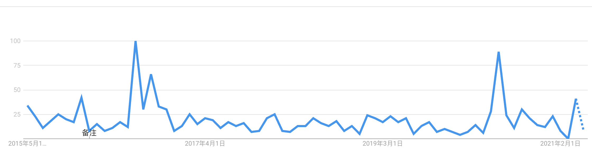

Fatal Police Shooting
Data and Trends
-
Three policies officers fired at Andrew Brown Jr. last month. Officers claimed Brown posed a threat to them as he “recklessly” drove his car at them while fleeing arrest.
Three of the seven officers at the scene fired a total of 14 shots at Brown. This is a tragic outcome no matter the shooting was justified by law or not.
-
History of Fatal Police Shootings
 Fatal police shooting has always been a problem in the United States. When police have guns, they inevitablely use it under certain scenerios. The plot above shows the trends of fatal police shootings in the past 5 years (starting in 2015). The shooting counts both justified and unjustified cases. Several famous unjustified fatal police shootings are annotated on the plot. Evidently, there are no clear increasing or decreasing trends of fatal police shootings, but the topic popularity online has skyrocketed after each of the major unjustified shootings.
Fatal police shooting has always been a problem in the United States. When police have guns, they inevitablely use it under certain scenerios. The plot above shows the trends of fatal police shootings in the past 5 years (starting in 2015). The shooting counts both justified and unjustified cases. Several famous unjustified fatal police shootings are annotated on the plot. Evidently, there are no clear increasing or decreasing trends of fatal police shootings, but the topic popularity online has skyrocketed after each of the major unjustified shootings.
Google Search Trend of Keyward: “Fatal Police Shooting”
 Two peaks in hot search is evident from the google data. One followed after the death of Walter Scott, and the other peak follows George Floyd’s death. Recently you may have felt the prevalence of fatal police shooting is higher than ever, but from the two plots above, we see no correlation between total fatal police shootings and search trends. Our perception of the fatal police shooting may be directed by the amount of news articles circulating the internet.
-
Which States Sees the Most Fatal Police Shootings?
Another problem we may ignore by looking at the national news websites is that fatal police shootings may be local problems. Often when we see something viral online, we want to think the event happened close to us and we begin to worry. But from the map below, we see that fatal police shootings are much denser in states like California and Texas compared to Nevada and Oregon.
 To emphasize on the distribution of fatal police shootings counts across the different states, the treemap below is a better visualization that allows you to compare between the sizes of each box (corresponding to a state). The larger the box, the higher the count of death due to police shootings.
To emphasize on the distribution of fatal police shootings counts across the different states, the treemap below is a better visualization that allows you to compare between the sizes of each box (corresponding to a state). The larger the box, the higher the count of death due to police shootings.

Age:

Race:
Insights and Discussions
Data Source
Link: https://www.kaggle.com/mrmorj/data-police-shootings License CC BY-SA 4.0